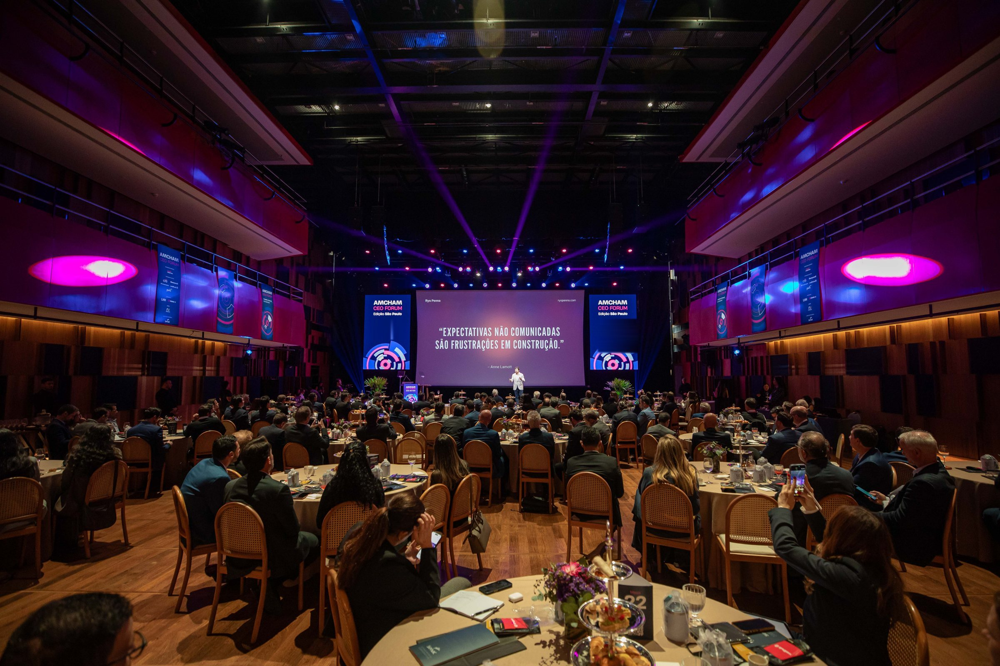

Leading Through Conversations
Your whole day is an attempt to convince someone. All of that influence happens inside conversations, and almost nobody looks at the conversation itself. This keynote makes the room look.

Ryo Penna's talk was the highlight of this edition.
Executive, Thyssenkrupp · Amcham's CEO Forum
Exceptionally clear and powerful. It sparked deep reflection on the spot and stayed with me long after.
Executive, Kuehne+Nagel · Amcham's CEO Forum
Your whole day is an attempt to convince someone. All of that influence happens inside conversations, and almost nobody looks at the conversation itself. This keynote makes the room look.
Everyone believes they already listen well. It is the only skill nobody thinks they need to train. And while the other person talks, the answer is already being drafted.
Anyone who uses AI has rewritten the same request three times until the machine understood. With people, nobody rewrites. The skill is the same.
The best talk I have seen here. Congratulations, and thank you for sharing so much wisdom.
YouTube comment · TEDxLaçador
Beyond comparison. Simply an incredible talk. It made me reflect on many things about myself.
YouTube comment · TEDxLaçador